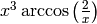
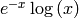
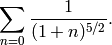
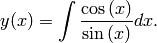
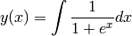
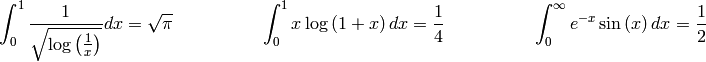

Cálculo Simbólico¶
En el capítulo anterior vimos cómo es posible usar técnicas numéricas para resolver problemas matemáticos complejos, como integrales, sistemas de ecuaciones, etc. En Física e ingeniería es prácticamente más habitual resolver ciertos problemas numéricamente debido a la dificultad o incluso imposibilidad de hacerlo analíticamente. Sin embargo, a menudo necesitamos resolver problemas metemáticos de manera analítica necesariamente, en ocasiones pueden ser problemas complejos. Por ejemplo, es posible que para obtener la primitiva cierta integral recorramos a técnicas de substitución, integración por partes, etc. o bien tengremos que consultar un libro de tablas de integrales.
Afortunadamente, los ordenadores también nos pueden ayudar al cálculo analítico y Python posee para ello módulo Sympy. Sympy es una librería de cálculo simbólico que permite resolver analíticamente múltiples problemas matemáticos, entre ellos derivadas, integrales, series numéricas o límites. Veamos algunas posibilidades de esta librería.
Introducción a Sympy¶
Al igual que en Python existen varios tipos de datos numéricos como enteros (int), decimales (float) o booleanos (bool: True, False, etc.), Sympy posee tres tipos de datos propios: Real, Rational e Integer, es decir, números reales, racionales y enteros. Esto quiere decir que Rational(1,2) representa 1/2, Rational(5,2) a 5/2, etc. y no 0.5 o 2.5.
>>> from sympy import *
>>> a = Rational(1,2)
>>> a
1/2
>>> a*2
1
>>> Rational(2)**50/Rational(10)**50
1/88817841970012523233890533447265625
También existen algunas constantes especiales, como el número e o  ,
si embargo éstos se tratan con símbolos y no tienen un valor númerico determinado. Eso
quiere decir que no se puede obtener un valor numérico de una operación usando el pi
de Sympy, como (1+pi), como lo haríamos con el de Numpy, que es numérico:
,
si embargo éstos se tratan con símbolos y no tienen un valor númerico determinado. Eso
quiere decir que no se puede obtener un valor numérico de una operación usando el pi
de Sympy, como (1+pi), como lo haríamos con el de Numpy, que es numérico:
>>> pi**2
pi**2
>>> pi.evalf()
3.14159265358979
>>> (pi+exp(1)).evalf()
5.85987448204884
como se ve, sin embargo, se puede usar el método evalf() para evaluar una expresión para tener un valor en punto flotante (float). Es posible incluso representar matemáticamente el símbolo infinito, mediante oo:
>>> oo > 99999
True
>>> oo + 1
oo
Para hacer operaciones simbólicas hay que definir explícitamente los símbolos que vamos a usar, que serán en general las variables y otros elementos de nuestras ecuaciones:
>>> x = Symbol('x')
>>> y = Symbol('y')
Y ahora ya podemos manipularlos como queramos:
>>> x+y+x-y
2*x
>>> (x+y)**2
(x + y)**2
>>> ((x+y)**2).expand()
2*x*y + x**2 + y**2
Es posible hacer una substitución de variables usando subs(viejo, nuevo):
>>> ((x+y)**2).subs(x, 1)
(1 + y)**2
>>> ((x+y)**2).subs(x, y)
4*y**2
Operaciones algebraicas¶
Podemos usar apart(expr, x) para hacer una descomposición parcial de fracciones:
>>> 1/( (x+2)*(x+1) )
1
───────────────
(2 + x)*(1 + x)
>>> apart(1/( (x+2)*(x+1) ), x)
1 1
─────── - ────────
1 + x 2 + x
>>> (x+1)/(x-1)
-(1 + x)
─────────
1 - x
>>> apart((x+1)/(x-1), x)
2
1 - ──────
1 - x
Para unirlas, podemos usar together(expr, x):
>>> together(1/x + 1/y + 1/z)
x*y + x*z + y*z
───────────────
x*y*z
>>> together(apart((x+1)/(x-1), x), x)
-1 - x
───────
1 - x
>>> together(apart(1/( (x+2)*(x+1) ), x), x)
1
───────────────
(2 + x)*(1 + x)
Cálculo de límites¶
Sympy puede calcular límites usando la función limit() con la siguientesintaxis: limit(función, variable, punto), lo que calcularía el limite de f(x) cuando variable -> punto::
>>> x = Symbol("x")
>>> limit(sin(x)/x, x, 0)
1
es posible incluso usar límites infinitos:
>>> limit(x, x, oo)
oo
>>> limit(1/x, x, oo)
0
>>> limit(x**x, x, 0)
1
Cálculo de derivadas¶
La función de Sympy para calcular la derivada de cualquier función es diff(func, var). Veamos algunos ejemplos:
>>> x = Symbol('x')
>>> diff(sin(x), x)
cos(x)
>>> diff(sin(2*x), x)
2*cos(2*x)
>>> diff(tan(x), x)
1 + tan(x)**2
Puedes comprobar que es correcto calculando el límite:
>>> limit((tan(x+y)-tan(x))/y, y, 0)
1 + tan(x)**2
También se pueden calcular derivadas de orden superior indicando el orden de la derivada como un tercer parámetro opcional de la función diff():
>>> diff(sin(2*x), x, 1) # Derivada de orden 1
2*cos(2*x)
>>> diff(sin(2*x), x, 2) # Derivada de orden 2
-4*sin(2*x)
>>> diff(sin(2*x), x, 3) # Derivada de orden 3
-8*cos(2*x)
Expansión de series¶
Para la expansión de series se aplica el método .series(var, punto, orden) a la serie que se desea expandir:
>>> cos(x).series(x, 0, 10)
1 - x**2/2 + x**4/24 - x**6/720 + x**8/40320 + O(x**10)
>>> (1/cos(x)).series(x, 0, 10)
1 + x**2/2 + 5*x**4/24 + 61*x**6/720 + 277*x**8/8064 + O(x**10)
e = 1/(x + y)
s = e.series(x, 0, 5)
pprint(s)
La función pprint de Sympy imprime el resultado de manera más legible:
4 3 2
1 x x x x
─ + ── - ── + ── - ── + O(x**5)
y 5 4 3 2
y y y y
Integración¶
La integración definida e indefinida de funciones es una de las funcionalidades más interesantes de Sympy. Veamos algunos ejemplos:
>>> integrate(6*x**5, x)
x**6
>>> integrate(sin(x), x)
-cos(x)
>>> integrate(log(x), x)
-x + x*log(x)
>>> integrate(2*x + sinh(x), x)
cosh(x) + x**2
También con funciones especiales:
>>> integrate(exp(-x**2)*erf(x), x)
pi**(1/2)*erf(x)**2/4
También es posible calcular integrales definidas:
>>> integrate(x**3, (x, -1, 1))
0
>>> integrate(sin(x), (x, 0, pi/2))
1
>>> integrate(cos(x), (x, -pi/2, pi/2))
2
Y también integrales impropias:
>>> integrate(exp(-x), (x, 0, oo))
1
>>> integrate(log(x), (x, 0, 1))
-1
Algunas integrales definidas complejas es necesario definirlas como objeto Integral() y luego evaluarlas con el método evalf():
>>> integ = Integral(sin(x)**2/x**2, (x, 0, oo))
>>> integ.evalf()
>>> 1.6
Ecuaciones algebraicas y álgebra lineal¶
Otra sorprendente utilidad de Sympy es su capacidad para resolver sistemas de ecuacuaciones fácilmente:
>>> # Una ecuación, resolver x
>>> solve(x**4 - 1, x)
[I, 1, -1, -I]
# Sistema de dos ecuaciones. Resuelve x e y
>>> solve([x + 5*y - 2, -3*x + 6*y - 15], [x, y])
{y: 1, x: -3}
Sympy tiene su propio tipo de dato Matriz, independiente del de Numpy/Scipy. Con él se pueden definir matrices numéricas o simbólicas y operar con ellas:
>>> # Matriz identidad 2x2
>>> Matrix([[1,0], [0,1]])
[1, 0]
[0, 1]
>>> x = Symbol('x')
>>> y = Symbol('y')
>>> A = Matrix([[1,x], [y,1]])
>>> A
[1, x]
[y, 1]
>>> A**2
[1 + x*y, 2*x]
[ 2*y, 1 + x*y]
Existen otros constructores similares a arrays de Numpy pero para matrices:
>>> # Matrices de unos
>>> ones((5,5))
[1, 1, 1, 1, 1]
[1, 1, 1, 1, 1]
[1, 1, 1, 1, 1]
[1, 1, 1, 1, 1]
[1, 1, 1, 1, 1]
>>> # Matriz identidad
>>> eye(3)
[1, 0, 0]
[0, 1, 0]
[0, 0, 1]
Hay que fijarse en que muchas de las funciones anteriores ya existen en Numpy con el mismo nombre (ones(), eye(), etc.), por lo que si queremos usar ambas debemos importar los paquetes con otro nombre, Por ejemplo:
>>> import numpy as np
>>> from sympy import *
>>> # Funcion eye de Sympy (matriz)
>>> eye(3)
[1, 0, 0]
[0, 1, 0]
[0, 0, 1]
>>> # Funcion eye de Numpy (array)
>>> np.eye(3)
array([[ 1., 0., 0.],
[ 0., 1., 0.],
[ 0., 0., 1.]])
>>> # Matriz de Numpy
>>> np.matrix(np.eye(3))
matrix([[ 1., 0., 0.],
[ 0., 1., 0.],
[ 0., 0., 1.]])
Es posible operar entre ellas, salvo que las matrices de Numpy no pueden operar con símbolos, algo que se puede hacer con Sympy. La selección de elementos de matrices de Sympy se hace de manera idéntica a los arrays o matrices de Numpy:
>>> # Multiplico la matriz identidad por x
>>> x = Symbol('x')
>>> M = eye(3) * x
>>> M
[x, 0, 0]
[0, x, 0]
[0, 0, x]
>>> # Substituyo x por 4 en la matriz
>>> M.subs(x, 4)
[4, 0, 0]
[0, 4, 0]
[0, 0, 4]
>>> # Substituyo la variable x por y en la matriz
>>> y = Symbol('y')
>>> M.subs(x, y)
[y, 0, 0]
[0, y, 0]
[0, 0, y]
>>> def f(x): return 1.5*x**2
....:
>>> eye(3).applyfunc(f)
[1.5, 0, 0]
[ 0, 1.5, 0]
[ 0, 0, 1.5]
>>> M = Matrix(( [1, 2, 3], [3, 6, 2], [2, 0, 1] ))
>>> # Determinante de la matriz
>>> M.det()
-28
# Matriz inversa
>>> M.inv()
[-3/14, 1/14, 1/2]
[-1/28, 5/28, -1/4]
[ 3/7, -1/7, 0]
>>> # Substituyo algunos elementos de la matriz
>>> M[1,2] = x
>>> M[2,1] = 2*x
>>> M[1,1] = sqrt(x)
>>> M
[1, 2, 3]
[3, x**(1/2), x]
[2, 2*x, 1]
Podemos resolver un sistema de ecuaciones por el método LU:
>>> # Matriz 3x3
>>> A = Matrix([ [2, 3, 5], [3, 6, 2], [8, 3, 6] ])
>>> # Matriz 1x3
>>> x = Matrix(3,1,[3,7,5])
>>> b = A*x
>>> # Resuelvo el sistema por LU
>>> soln = A.LUsolve(b)
>>> soln
[3]
[7]
[5]
Ejercicios¶
Calcular la derivada de .
Calcular la derivada segunda de .
Calcular los diez primeros elementos de la serie:

Calcular la siguiente integral:

Evaluar el resultado para x=0.5.
Calcular la integral siguiente y evaluar su valor en x=1.5:

Comprobar las siguientes integrales definidas:
